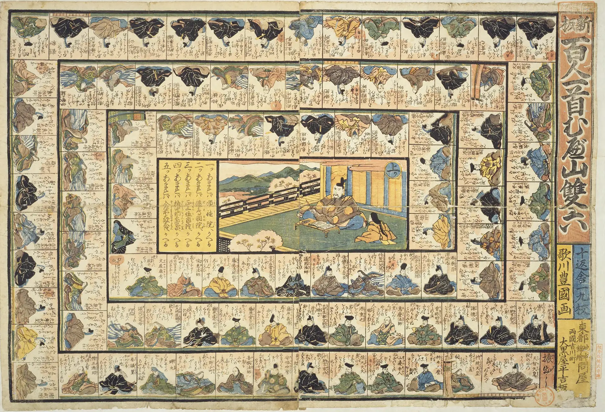

Hyakunin Isshu Mubeyama Sugoroku
A sugoroku (a traditional Japanese board game played with a die) that uses the board of “Shinpan Hyakunin Isshu Mubeyama Sugoroku,” an Edo-period game edited by Jippensha Ikku and illustrated by Utagawa Toyokuni. Each of the 100 squares has a true/false quiz about a Hyakunin Isshu poet. Square 22 — the poem known for the phrase “mube yamakaze o” — holds a special surprise.
Click a number on the board to see that poet's poem and its English translation.
How to Play
- 🌀Travel a path of 102 squares themed on the Hyakunin Isshu (squares 1–100 belong to the poet with the same poem number)
- 🎲Roll the die and move forward that many squares
- ❓To move onto the square you land on, you must answer that poet's true/false quiz correctly
- 🔁If you answer wrong, you simply stay where you are. On your next turn, you can try the same question again
- 🔢You can choose which square to start from, and head for the agari (goal) from anywhere you like
-
🌀
Land on square 22 and the special Mubeyama Sugoroku rule lets you roll the die again.
Depending on the number you roll, you warp to another square:- 1 → square 100
- 2 → square 13
- 3 → square 98
- 4 → square 97
- 5 → square 96
- 6 → no warp; move forward 6 squares as usual
- ⛰️The first player to reach the agari (goal) wins
- 🏅Playing solo, try to reach the goal in as few turns as possible and beat your personal best. With 2 or more players, race to see who reaches the goal first!
Number of players (up to 5)
Choose your starting square
The default is 0 (the start). For example, set it to 50 to start from square 50 and head for the goal (square 101).
Choose your character
No record yet

Utagawa Kunisada, Public domain, via Wikimedia Commons
Roll the die!
Quiz: Hyakunin Isshu
The question goes here.